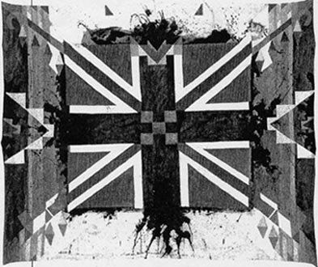

Blankets
"A Minor Sport In Canada"
Boyer is most well known for his paintings on felt blankets that he made in the 1980s and 90s. Some of his blankets were made to reflect the blankets with smallpox given to the first nations.
"There were paintings on silk or cloth and gradually this whole thing about art not having to be made on stretched canvas really began to get through to me."
~Robert Boyer
Loading the player...
Home | Blankets | Pow Wow | Artwork